1893—School Needlework
by Olive C. Hapgood
Part III—Ornamental Stitches
HEM-STITCH
Hem-stitching is a method of hemming, in which the threads of the cloth are drawn and separated.
Materials— No. 8 needle, No. 50 thread, and a lengthwise strip of linen crash.
Hem-stitch, from right to left—
1 One inch from a lengthwise edge of the cloth, draw out from four to six threads (see suggestions) according to the coarseness of the cloth.
2. Carefully baste the hem to the line thus drawn.
3. Begin at the right-hand side, as for hemming.
4. Pointing the needle towards you, take up three or four cross-threads, and draw the thread through.
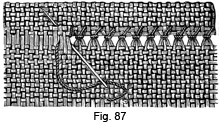5. Put the needle back, take up the same threads, and insert the needle exactly above in the fold of the hem (Fig. 87).
6. Continue in the same manner, drawing the thread tight, to separate the cross-threads.
Hem-stitch, from left to right—
1. Draw the threads, and baste the hem as before.
2. Fasten the thread in the hem, at the left-hand side.
3. Pointing the needle towards you, take up three or four cross-threads.
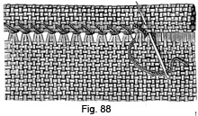4. Draw the needle through, and insert it in the fold of the hem exactly above where it was inserted under the cross-threads (Fig. 88).
5. Continue in the same manner, drawing the thread tight.
Suggestions— To draw the threads, choose a coarse thread, one-fourth of an inch from the edge, and pick it out with the point of the needle. Holding this end with the right hand, draw it out carefully, continually pushing the gathers towards the opposite end with the left hand. Should the thread break, hold the cloth to the light, and again pick out the end of the thread. The chief difficulty is in drawing the first thread. Threads can be drawn any width desired.
Hem-stitching can be done either lengthwise or crosswise of the cloth. On fine materials, do not count the threads, as it is too great a strain on the eyes, and for this reason, school-girls should not do much drawn-work.
CATCH OR HERRINGBONE-STITCH
Catch-stitch is a kind of cross-stitch, used to secure the edges of flannel.
Materials— A long-eyed needle, a knot of split zephyr, and a piece of canvas.
Catch-stitch—
1. Work from you, holding the canvas over the left forefinger.
2. Insert the needle from underneath, at the lower left-hand corner.
3. From the place where the zephyr comes out, count to the right four threads, then forward four threads; insert the needle, and pointing it towards you take up two threads.
4. From the place where the zephyr comes out, count to the left four threads, then forward four threads, and take up two threads as before.
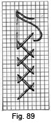5. Continue in the same manner, making the stitches to the right, then to the left; the zephyr crossing diagonally (Fig. 89).
6. Notice that the little cross at one side, comes between the crosses on the opposite side, and that the needle comes out on a line with its insertion for the previous stitch.
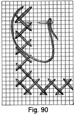7. Turn the corner, by taking a stitch at the left, insert the needle at the right, and pointing it towards the left, take up two threads (Fig. 90). Turn the canvas, and holding the next side across the left forefinger, continue as before (Fig. 90).
Suggestions— In catch-stitching on flannel, small knots may be made if they can be concealed. When ending, fasten the thread by running it in and out under the last stitch. The thread can be fastened in beginning and finishing, by leaving an end to be sewed over and over with fine cotton on the wrong side.
The raw edge of a hem on woolen material may be fastened by catch-stitches, to avoid the ridge formed by folding the edge. The edges of a seam in flannel may be fastened in several ways; the seam may be folded to one side, and the edges fastened by a row of catch-stitches; the seam may be opened and each edge fastened separately; or, with the seam opened, a row of catch-stitches may be put in the middle.
FEATHER-STITCH
Feather-stitching is used for ornamenting garments, etc.
Materials— A long-eyed needle, a knot of split zephyr, and a piece of canvas.
Feather-stitch—
1. Work towards you, holding the canvas over the left forefinger.
 2. Draw the needle through from underneath at the upper left-hand corner
(Fig. 91, b).
2. Draw the needle through from underneath at the upper left-hand corner
(Fig. 91, b).
3. From the place where the zephyr comes out, count two threads to the right, insert the needle, and pointing it towards you take up two threads of the canvas.
4. Draw the needle out over the zephyr, which is held down by the thumb.
5. From the place where the zephyr comes out, count two threads to the right, and take a stitch as before.
6. From the place where the zephyr comes out, count two threads to the left, and take a stitch, being careful to hold the zephyr down with the thumb.
7. From the place where the zephyr comes out, count two threads to the left, and take another stitch.
8. Continue taking the stitches in this way (Fig. 91, b).
Suggestions— For fastening the thread see catch-stitching (page 118). This stitch may be changed into various designs, as in Fig. 91. Whatever the pattern, the stitches should be compact and uniform.
CHAIN-STITCH
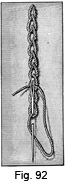Chain-stitching is a method of embroidering, by which the stitches resemble a chain.
Materials— An embroidery needle, embroidery silk, and a strip of cloth.
Chain-stitch—
1. Work towards you, holding the cloth over the left forefinger.
2. Draw the needle through from underneath at the upper end, a short distance from the edge.
3. Holding the thread to the left with the thumb, insert the needle where the thread comes out, and bring it through one-eighth of an inch below, and over the thread to form the loop.
4. Continue in this manner, always inserting the needle inside the loop of the last stitch, and being careful to take the same number of threads on the needle for each stitch.
Suggestion— Chain-stitching is often used for outlining a pattern.
KENSINGTON OUTLINE-STITCH
Kensington outline-stitching is done by taking a long stitch forward on the upper side, and a short stitch backward on the under-side of the cloth, and is used to form a line for ornament.
Materials—An embroidery needle, embroidery silk, and a strip of cloth.
Kensington outline-stitch—
1. Work from you, holding the cloth over the left forefinger.
2. Draw the needle through from underneath, at the lower end.
class="clear"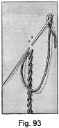3. Insert the needle one-eighth of an inch above, and two or three threads to the right, bringing it out at the left one-sixteenth of an inch above the place where the thread comes through the cloth (Fig. 93).
4. Continue in this way, keeping the thread to the right of the needle, and being careful not to draw the stitches tight.
Suggestions— Some prefer keeping the thread to the left of the needle. Stem-stitching is similar to outline-stitching, except that the needle is put farther back.
BLANKET-STITCH
Blanket-stitching is used to secure and ornament the edges of woolen material.
Materials— An embroidery needle, embroidery silk, and a strip of flannel.
Blanket-stitch—
1. Work from left to right, holding the edge of the flannel towards you.
2. Beginning at the corner, insert the needle one-fourth of an inch from each edge, and take two running stitches to the edge, leaving an end of the thread to be cut off afterwards. This brings the thread in position for working.
3. Holding the thread under the left thumb, put the needle in where it was first inserted.
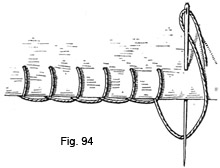4. Draw the needle through and over the thread (Fig. 94).
5. Holding the thread down with the thumb, insert the needle one-fourth of an inch to the right, and parallel with the previous stitch.
6. Draw the needle through, and over the thread, being careful that the thread lies loosely on the edge of the flannel.
7. Continue in this manner.
8. To fasten the thread, turn to the wrong side, take a running stitch under the last blanket-stitch. Draw the thread through, and cut it off.
9. To join the thread, put the needle in under the last stitch, as in beginning the work, and draw it out over the thread that lies along the edge.
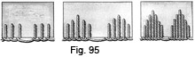Suggestions— If the thread is not fastened and joined carefully, the symmetry of the stitches will be broken. The order of the stitches may be varied by taking them at different depths, and leaving spaces between, as in Fig. 95.
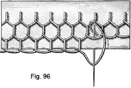A pretty border can be made with this stitch (Fig. 96), by making the first row the desired width from the edge, and taking the stitches for the second row through those of the first row, and so on.
EMBROIDERY KNOTS
Embroidery knots are used for ornamentation.
Materials— An embroidery needle, embroidery, silk, and a piece of flannel.
Embroidery knot No. 1—
1. Holding the flannel over the left forefinger, draw the needle through from underneath, at the place desired for the knot.
2. Take a small backstitch leaving the needle half-way through the flannel.
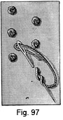3. Take the silk, where it comes through the flannel, and wind it twice around the needle (Fig. 97).
4. Holding the coil under the left thumb, draw the needle through and insert it where it came through the flannel, bringing it out where the next knot is to be made.
Embroidery knot No. 2—
1. Holding the flannel over the left forefinger, draw the needle through from underneath, at the place desired for the knot.
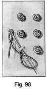2. Draw the silk towards you to the left; holding it under the thumb, bring the silk to the right, and cross below where the silk came out of the flannel (Fig. 98, a). Hold the loop thus formed under the thumb.
3. Insert the needle one or two threads back of a, bring it out at a, and pass it through the loop (Fig. 98).
4. Draw the needle and silk out straight upwards.
5. Insert the needle again at a, and bring it out where the next knot is to be made.
MARKING
Page 126 consists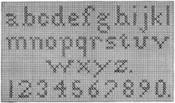 of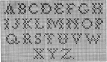 capital letters; page 127 consists of small letters and upright numerals; page 128 consists of small letters, suitable for fine material, and slanting numerals.
The material, thread and needle should correspond. The marking stitch consists of a cross-stitch taken over two threads of the canvas. To make the stitch, draw the needle through from underneath at the lower right-hand corner of the square for the stitch; insert the needle at the upper left-hand corner, bringing it out at the lower left-hand corner; insert the needle at the upper right-hand corner, and bring it out at the lower right-hand corner of the next stitch.
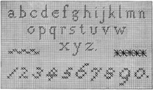Make no knots, but leave an end of the thread to be worked over with the first stitches, or it can afterwards be run in and out under the letter. Fasten the thread in the same manner. The stitches should all be crossed the same way; the thread should be fastened after finishing a letter, not carried from one to another. Have the back of the work look neat.
When marking on canvas is understood, fine material can be easily marked, by basting a piece of scrim over the place to be worked, and, after taking the stitches, drawing out the threads of the scrim.